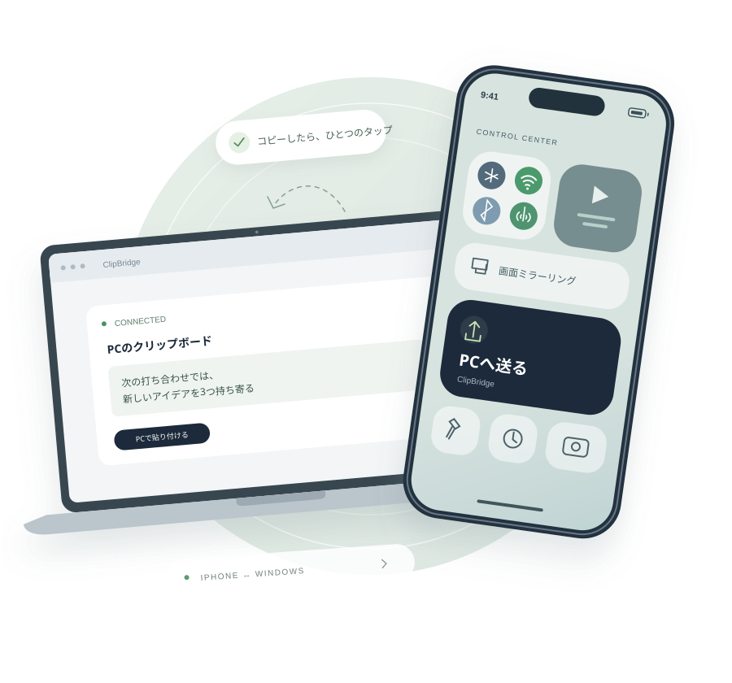
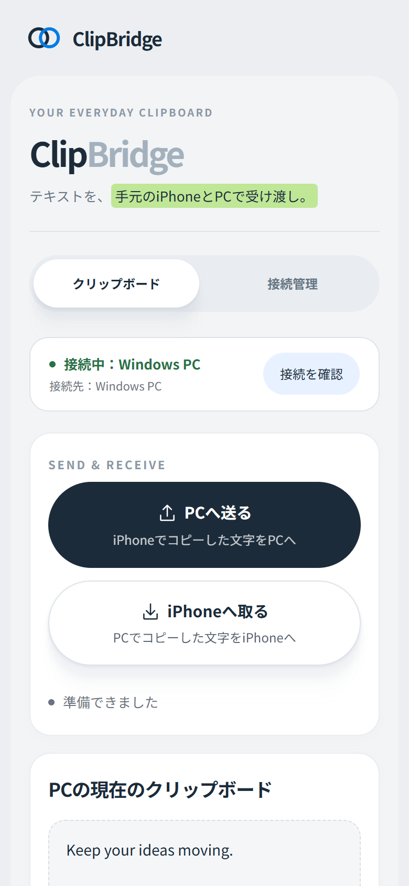

気になったページを、PCで
iPhoneで見つけたURLを送って、
大きな画面で続きを調べる。
コピーした文字を、いつもの端末へ。
iPhoneとWindowsの間で、文章やURLを
シンプルに受け渡せます。
すべて無料 · Pythonのインストール不要 · Tailscaleで接続

スマホで見つけたURLも、外出先で書いたメモも。
文字だけを、使いたい端末へ。
iPhoneで見つけたURLを送って、
大きな画面で続きを調べる。
移動中にまとめた文章を送って、
Windowsで編集を続ける。
Windowsでコピーした文字を、
iPhone側のボタンで取り出す。
iPhoneでコピーしたら、コントロールセンターへ。
「PCへ送る」をタップし、Windowsで貼り付け。
設定後の操作は、これだけです。
コピーしたテキスト
iPhone側の「PCへ送る」を押してください
ショートカットの追加とコントロールセンターへの登録は、初回にiPhoneで設定します。
送る、取り出す、接続を確かめる。
毎日の操作を、ひとつの画面にまとめました。
接続先と状態を画面上部に表示。
送受信の結果と時刻を表示。初回はテスト送信も。
完了した準備項目や初回の案内は非表示に。

用意するのは、iPhoneとWindows PC。
PC側から順番に設定していきましょう。
無料のWindowsアプリをダウンロードして展開し、ClipBridge.exeを開きます。Pythonの個別インストールやコマンド入力は不要。ブラウザーに開く「PCセットアップ画面」がTailscaleの状態を確認し、HTTPS公開まで自動で設定します。
Windows 10 / 11の64ビットPC向けです。現在のアプリにコード署名はなく、Windowsが発行元を確認できない旨を表示する場合があります。接続情報は更新後も引き継がれます。
App StoreからTailscaleを入れ、PCと同じアカウントでログイン。VPN接続をオンにしたら、PCセットアップ画面に表示されるQRコードをカメラで読み取ります。
App StoreでTailscaleを開く ↗VPN構成の追加を求められたら許可してください。QRコードを読めないときは、表示されたURLをSafariで開いて6桁のコードを入力します。
Safariの共有ボタンから「ホーム画面に追加」。以後はホーム画面のClipBridgeを開くだけで、PCでコピーした文字が届き、iPhoneのコピーをPCへ送れます。接続設定は引き継がれます。
アップデートはPCセットアップ画面の「アップデートして再起動」から。GitHub Releasesから取得し、サイズとSHA-256を検証してから入れ替えます。
無料アプリには、Tailscaleの自動チェックと修復、QR／コードによるペアリング、更新の確認と適用が含まれます。このLPから自動インストールは行いません。利用中はPCのClipBridgeを起動したまま、両方のTailscaleを接続しておいてください。
常時自動同期する仕組みではありません。PCでコピーした内容は開いているiPhoneの画面に自動で届きますが、iPhoneからPCへは画面のボタンで送信します。iOSの制約により、ほかのアプリでのコピーをバックグラウンドで監視することはできません。
インストールするアプリはTailscaleだけです。ClipBridgeの画面はSafariで利用でき、ホーム画面にも追加できます。
利用するWindows PCの電源を入れ、ClipBridgeを起動しておく必要があります。PCがスリープ中やTailscaleが未接続の場合、送受信できません。
両端末が同じTailscaleネットワークに接続できていれば、同じWi-Fiでなくても利用できます。インターネット接続と、PC側のHTTPS公開設定が必要です。
現在はテキスト専用です。文章やURLを受け渡せますが、写真・画像・ファイルの共有には対応していません。
PCセットアップ画面に表示されている6桁のコードを入力するか、QRコードをもう一度読み取ります。コードは1回使うたびに新しくなります。ホーム画面に追加した版は接続設定を引き継ぐので、再入力は不要です。
はい。Python不要のWindowsアプリ、セットアップ案内、Tailscaleのチェックと修復、更新の確認と適用を含め、ClipBridgeの機能はすべて無料です。更新はPCセットアップ画面の「アップデート」から適用できます。Tailscaleは別サービスで、利用条件は同社に従います。
毎日のコピペに、小さな橋を。
ClipBridgeを使い始める